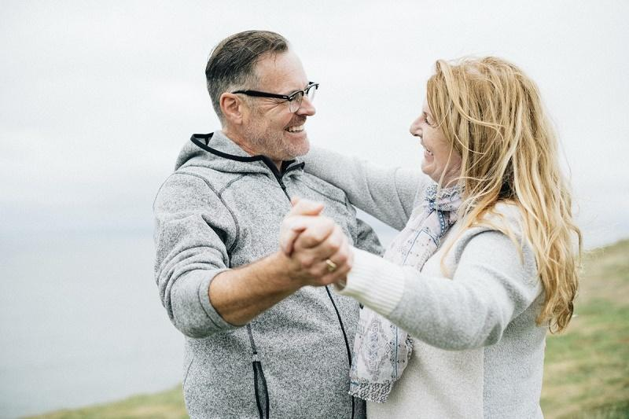

FCE 2026 - Test 2
Reading and Use of English (75 minutes)
Listening (about 40 minutes)
Each recording is played twice. Use headphones and read the questions before you listen.
Writing (80 minutes)
Part 1 - Essay (compulsory)
In your English class you have been discussing the impact of technology on human communication. Your teacher has asked you to write an essay for homework.
Write an essay using all the notes and giving reasons for your point of view.
Notes:
Write about:
1. keeping in touch across long distances
2. face-to-face conversations in daily life
3. ___________ (your own idea)
Write your essay in 140 - 190 words.
Part 2 - Choose ONE task
Write an answer to one of the questions (a - c) in this part. Write your answer in 140 - 190 words in an appropriate style.
(a) Article: You see this announcement in an international magazine: My Favorite Hobby! What activity do you enjoy most in your spare time? Write an article describing your hobby, how you got started, and why you would recommend it to others.
(b) Email: Your English-speaking friend Chris has just won a photography competition and you want to congratulate him. Write an email to Chris, express your excitement, ask how he took the winning photo, and invite him to celebrate next weekend.
(c) Review: You recently watched a documentary series about wildlife and nature conservation. Write a review for a local magazine, describing the most memorable episode and explaining whether you think everyone should watch it.
Sending opens your email app with your text. Very long texts are copied to the clipboard so you can paste them.
Speaking (14 minutes)
Practise with a partner or teacher. The real test lasts about 14 minutes.
Part 1 - Interview (2 minutes)
- What kind of music do you usually listen to, and when?
- How do you like to spend your weekends?
- Do you prefer cooking at home or eating out in restaurants? Why?
- What is your favourite season of the year, and what do you like about it?
Part 2 - Long turn (1 minute each)
Candidate A: Compare the pictures and say how these different activities might affect people's physical and mental well-being.
Candidate B: Compare the pictures and say how people might feel spending time in these different environments.
Candidate A's pictures: Active Lifestyles
Compare the pictures and say how these different activities might affect people's physical and mental well-being.
77.jpg)

Candidate B's pictures: Solitude and Relationships
Compare the pictures and say how people might feel spending time in these different environments.
77.jpg)
Part 3 - Collaborative task (3 minutes)
What are the most important qualities of a good friend? Discuss the ideas below, then decide which TWO are the most essential for a lifelong friendship.
- being trustworthy and honest
- having a good sense of humour
- offering support during hard times
- sharing similar interests and hobbies
- being a good listener
Part 4 - Discussion (4 minutes)
- Why is it sometimes difficult to maintain friendships as people get older and busier?
- Do you think it is easier to make friends online or in person? Why?
- Some people say that having a few close friends is much better than having many acquaintances. Do you agree?